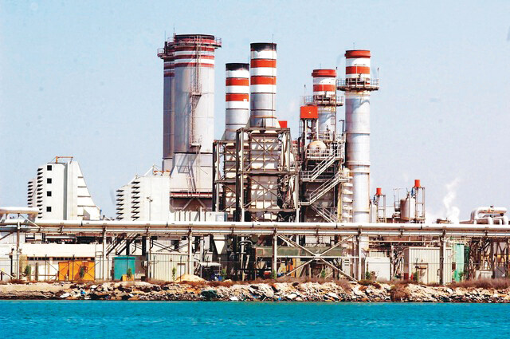
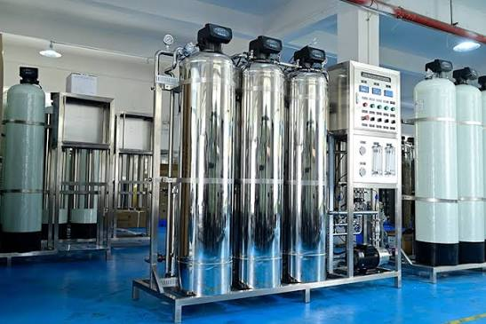
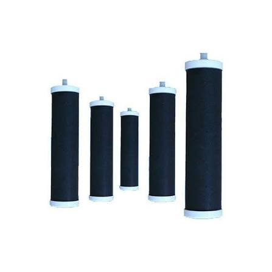
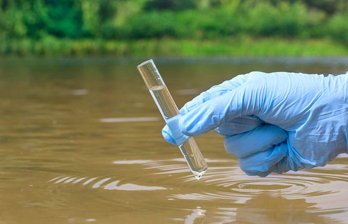
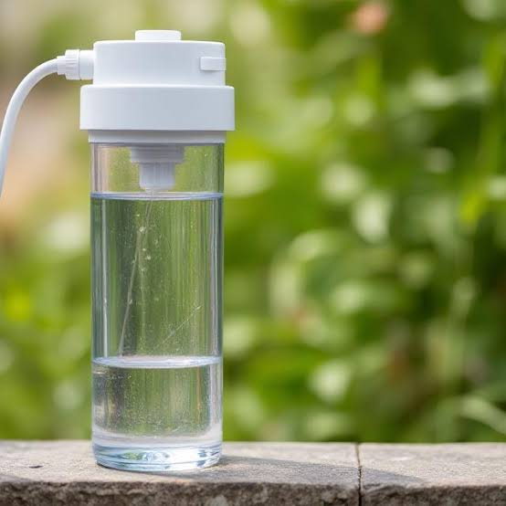
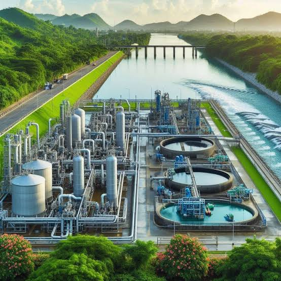
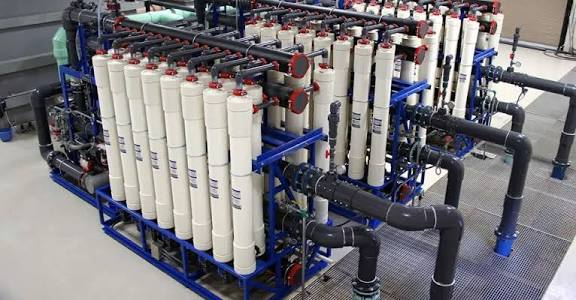
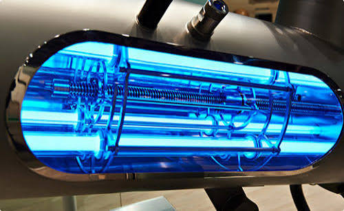

معرض مصور يوضح مراحل وأنواع فلترة المياه، من الطرق التقليدية البسيطة إلى أحدث التقنيات.








يزيل ٩٩٪ من الملوثات. مثالي لمياه الآبار والترع.
يزيل الكلور والروائح. اقتصادي وسهل التركيب.
يزيل البكتيريا مع الحفاظ على المعادن المفيدة.
تقتل الكائنات الدقيقة بدون كيماويات.